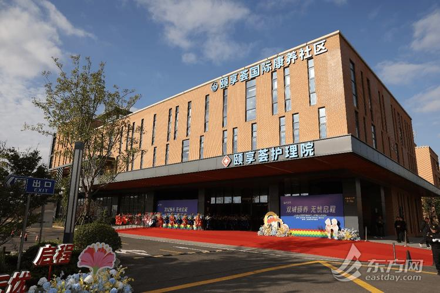
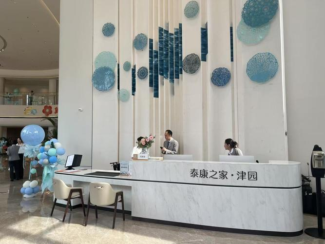

银龄智行记·朝阳社区驿站
北京市朝阳区建国路88号阳光社区1号楼 | 距离您：701m
服务项目：日间照料、助餐配餐、康复理疗、文娱活动、健康体检
营业时间：周一至周日 08:00-18:00 | 联系电话：010-85462233
驿站面积320平米，设有休息区、餐饮区、理疗室、活动室。配备专业护工5名，每日提供营养午餐，定期组织健康讲座和文娱活动。服务周边3个社区，累计服务2800+位老人。
银龄智行记·浦东社区驿站
上海市浦东新区世纪大道1号锦绣花园A区 | 距离您：1.2km
服务项目：居家护理、康复训练、助浴服务、心理咨询、紧急救助
营业时间：周一至周日 07:00-20:00 | 联系电话：021-68945566
驿站面积280平米，配备康复训练器材、智能监测设备。提供24小时紧急呼叫服务，30分钟内响应。与附近三甲医院建立绿色通道，为老人健康保驾护航。月服务量超1500人次。
跨区域协同 · 成功实践

黄浦-松江双区协作
2024年启动区域养老服务资源互补共享试点，黄浦区老人可预约松江区驿站床位，享受同等服务价格。打通两区医保结算系统，实现异地就医即时报销。目前已有180多位老人受益，满意度达95%以上。

京津冀跨城养老
建立京津冀三地养老服务异地认证体系，统一服务标准和收费规范。北京老人可选择到天津、河北养老，享受北京医保待遇。目前已接入三地驿站220家，服务跨城养老老人3600+位，实现"家乡医保，异地养老"新模式。